사업영역
건설
CONTSRUCTION토목
CIVIL WORK
50여 년의 역사를 자랑하는 토목분야의 우수한 기술력을
바탕으로 건설한국을 이룩하고 있습니다.
코오롱글로벌이 대한민국 토목기술을 한 단계 더 높여
가겠습니다.
- 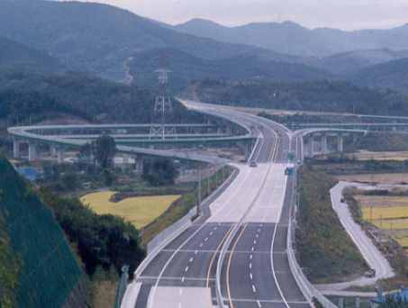
-
남해고속도로 내서-냉정간 8차로 확장공사 제2공구
- 발주처
- 한국도로공사
- 위치
- 남해
- 공사기간
- 1996.03.01 ~ 2001.10.01
- 공사개요
-
- 총연장 : 3.34㎞(폭 23.4m)
- -4차로 신설
- -교량공 : 8개소(2,993m)
- -암거공 : 13개소(615m)
- -부대공 : 1식(철원 JCT 1개소)
- 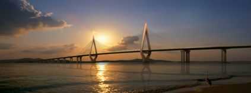
-
대한방직 ~ 수원역 우회도로간 도로개설공사
- 발주처
- 수원시
- 위치
- 경기도 수원시 권선구 평동 (수원역 부근)
- 공사기간
- 2000.09.01 ~ 2003.06.01
- 공사개요
-
- 총연장 : 840m
- -강교(500m), 도로(340m)
- -램프교량(226m)
- -보도육교(47m)
- -철도구간 I.L.M 시행
- 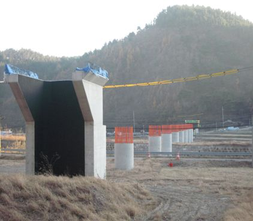
-
동해선 포항-삼척 철도건설 제4공구 노반건설공사
- 발주처
- 한국도로공사
- 위치
- 경북 포항시 북구 지경리~영덕군 남정면 남호리
- 공사기간
- 2009.04.01 ~ 2015.12.21
- 공사개요
-
- 총길이 L=9.5km
- 교량 6개소, 터널 5개소, 정거장 1개소
- 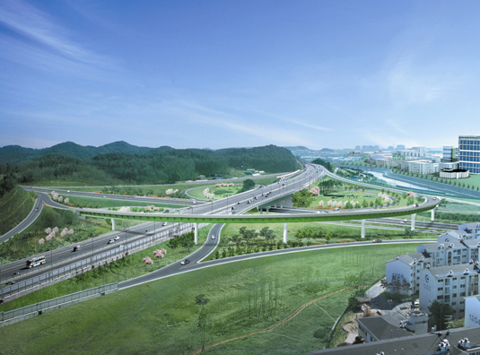
-
인천대교 연결도로 건설공사(제1공구)
- 발주처
- 한국도로공사
- 위치
- 인천광역시 중구 운서동 ~ 중구 운남동
- 공사기간
- 2006.01.01 ~ 2009.08.01
- 공사개요
-
- 총연장 : 2.4㎞
- -폭 30.6m, 왕복 6차선
- -교량 10개소
- -배후단지 JCT 1개소
- -영종IC 1개소
- -연약지반처리 : PBD공법(PET MAT, PP MAT)
- -배수관 24개소(1,337m)
- -암거공 5개소(76m)
SOC
SOC
코오롱글로벌은 선진금융기법 도입을 통하여 업계를
주도하고 있습니다.
창의적인 사업개발과강력한 추진력으로 21세기형 투자사업을
선도합니다
- 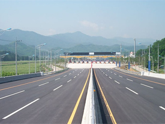
-
광명~서울간 고속도로 민간투자사업
- 발주처
- 서서울고속도로㈜
- 위치
- 경기도 광명시 가학동
- 공사기간
- 2014.07.01~ 2019.06.30
- 공사개요
-
- 연장 20.7km 왕복 4~6차로
-
대구 4차순환도로(범물지구~안심국도)
- 발주처
- 대구동부순환도로㈜
- 위치
- 대구광역시 수성구 범물동~동구 율하동
- 공사기간
- 1997.10.22~ 2002.08.24
- 공사개요
-
- -총투자비 : 1,660억원
- -공사비 1,417억원
- -당사지분 : 29.27%
- -운영개시일 : 2002. 09. 01
-
-사업규모 : 총연장 7.25km
(교량 4개소, 지하차도 1개소, 영업소 2개소)
- 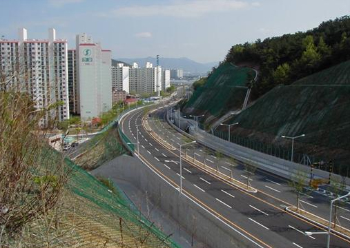
-
대구 제2팔달로(태전동~구마지선)
- 발주처
- 대구서북도로㈜
- 위치
- 대구광역시 북구 태전동
- 공사기간
- 1997.10.10~ 2003.04.30
- 공사개요
-
- -총투자비 : 535억원
- -공사비 432억원
- -당사지분 : 29.73%
- -운영개시일 : 2003. 04. 30
- - 사업규모 : 총연장 4.742km (민자 1.27km, 시비 3.472km)
- 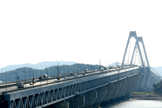
-
인천국제공항고속도로 민간투자사업
- 발주처
- 신공항하이웨이㈜
- 위치
- 경기도 고양시 강매동
- 공사기간
- 1995.12.29~ 2000.11.28
- 공사개요
-
- -총투자비 : 14,766억원
- -공사비 11,352억원
- -운영개시일 : 2000. 12. 05
- -공사규모 : 총연장 40.2km (본선 36.5㎞, 지선 3.7㎞)
건축
ARCHITECTURE도시의 풍경을 바꾸는 기술과 디자인, 코오롱글로벌이 앞서 갑니다.
- 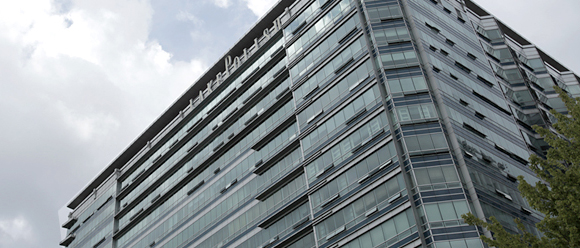
-
코오롱글로벌 건축부문은 앞선 기술과 친환경 건축 철학을 바탕으로 업무ㆍ교육ㆍ연구ㆍ공장ㆍ스포츠 및 레저시설 등 생활에 필요한 모든 형태와 용 도의 건축물을 짓고 있습니다.
1997년 과천코오롱신사옥에 이어 2000년 인천연수구청의 한국건축문화대상 수상을 통 해 한국 건축사를 새롭게 썼으며, 뛰어난 외관으로 유명한 잠 실 올림픽수영장, 국내 영화사 백년 의 상징인 단성사 신축. 6만 5000석 규모의 대구월드컵경기장, 김해국제공항 관제탑, 대구야외음악당, 아시아드C.C 등 기능성과 미관을 동시에 충족시키는 건축물로 대한민 국의 스카이라인을 바꾸었으며, 삶의 질을 높여 왔습니다.
- 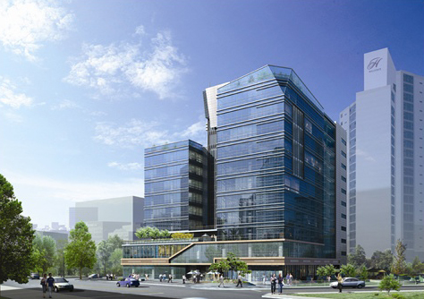
-
특히 지열 냉난방 시스템, 건물외장형 태양열 발전, 친환경 외피, 생태연못 등을 적용한 코오롱 글로벌 기술연구소는 '05년 국내 업무용 건축물 중 최초로 친환경 최우수 본인증을 받아 친환경 건축기술 개발에 있어서 독보적인 성과를 보여주었습니다. 2010년 코오롱글로벌은 서울 구로동 빌란트1~2, 싸이언스밸리 1~2차, JnK디지털타워, 성수 동 서울숲 코오롱디지털타워 1~3차 등 아파트형 공장 붐을 주도하고 있습니다.
인천 송도국제도시의 랜드마크인 동시에 IT메카로 탄생한 송도IT센터와 수준 높은 공연과 감상이 가능한 한남동 공연장은 코오롱글로벌의 첨단 기술력과 앞선 시공능력으로 지어졌습니다.
주택
HOUSING코오롱글로벌은 한 발 앞선 브랜드 가치와 기술력으로 주거 문화를 선도하고 있습니다.

한 발 앞선 브랜드 가치와 기술력으로 주거 문화를
선도하고 있는 코오롱글로벌은 하늘채로 대표되는 살기
좋은 주거 공간을 짓고 있습니다. 코오롱글로벌 주택
부문은 살기 좋은 아파트 대통령상을 수상한 대전
가오지구 코오롱 하늘채를 비롯 하여 국내에서 호텔형
아파트의 효시가 된 분당 트리폴리스 등 초고층
주거공간과 판교린든그로브 등 고급빌라, 잠실
시영재건축 등 재개발 및 재건축사업에 이르는 다양한
편리하고 아름다운 주택을 공급하고 있습니다.
2000년 하늘채 브랜드 런칭을 통해 주택사업 부문은
우리나라 아파트를 대표하는 브랜드로 성장하기 위해
다양한 노력을 기울였습니다. 특히, 2003년에 선보인
주택문화관은 아파트의 새로운 개념을 한 눈에 살펴볼
수 있는 공간으로 높은 호응을 얻고 있습니다. 집과
사람에 대한 남다른 철학과 기술력으로 2009년 10월에는
서울 강남구 신사동 주택문화관에서 새롭게 개발한
‘칸칸(KANKAN)’을 선보였습니다. 칸칸은 1년 넘게 함께
연구개발한 작품으로, 기업과 전문가, 소비자 전문가와
가구업체가 함께 팀을 이뤄 개발한 작품이라는 점에서
큰 호응을 얻었습니다. 이러한 축적된 기술력을
바탕으로, 향후 대한민국의 주거산업을 선도해 날
것입니다.
환경
environment
인간·환경·기술, 코오롱글로벌이 지향하는 미래
비전입니다.
고객의 만족과 인류의 풍요로운 삶을 위해
더욱 노력하는 기업이 되겠습니다.
- 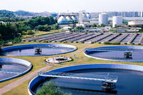
-
깨끗한 환경은 인간에게 가장 소중한 자원으로 우리 모두가 지켜나가야 할 국가의 미래가치입니다. 코오롱글로벌은 이러한 인간과 환경이라는 미래가 치의 중요성을 인식하여 일찍 부터 환경기술 개발과 역량 확보에 주력하고 있습니다. 1985년 환경사업부 발족 이래 26년간 축적된 설계, 시공, 시운전의 경험을 바탕으로 보다 효율적이고 경제적인 환경 설비 개발에 많은 투자와 노력을 기울이고 있습니다. 주요 환경사업 부문은 폐수ㆍ하수처리, 소각ㆍ집진처리,정수순수처리,폐기물자원화시설, 매립시설 등이 있습니다.
-

-
그 중 하수처리 분야는 환경신기술 지정 및 국내 최대의 고도처리 공정개선사업에 선정되는 등 기술력을 대내외에 인정받고 있습니다. 또한 폐기물 분 야는 최신의 첨단설비로 소음, 진동, 악취 등의 발생을 근본적으로 억제하여 폐기물을 가 장 안정적으로 처리하여 환경에 미치는 영향을 최소화하고 있습니다. 다음 세대에게 물려줄 깨끗한 환경을 코오롱글로벌이 책임지겠습니다. 앞으로도 코오롱글로벌은 고객의 만족과 인류의 풍요로운 삶을 위해 더욱 노력하는 기업이 되겠습니다.
플랜트
PLANTS다양한 건설실적을 보유하고 있는 코오롱글로벌은 앞선 기술력으로 세계로 뻗어나갑니다.
- 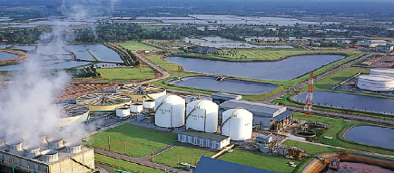
-
플랜트사업부문은 국내 주요화학업체 및 그룹계열사의 Chemical Plant, 합성섬유 Plant 분야에 다양한 건설실적을 보유하고 있습니다. 대표적으로 한솔케미칼 전주 과산화수소 공장 및 남해화학 여천 황신공장 등을 건설하였습니다. 또한, 2010년에 GS caltex HOU Tank Plant를 완공 함으로써 대형 Tank Terminal 시공 실적을 보유하게 되었습니다. 한편, 1993년 풍국주정, 1997년 서호주정, 1998년 무학주정, 2004년 일산실업 주 정설비를 건설함으로써 주정 기술에 대하여 국내에서 독보적 위치를 확보하였습니다. 관련 기술인 연료용 Bio-ethanol 프로젝트 등 신·재생에너지 사 업에도 능동적으로 대처하여 2008년 무학주정이 발주한 캄보디아 연료용 Bio-ethanol 공장 건설을 성공리에 완료하였습니다.
- 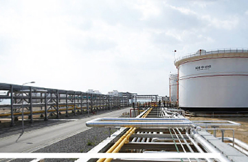
-
아울러 여러 대형 산업 Plant 건설은 물론 중소규모 Plant, 공장자동화부문건설에 이르기까지 수많은 Project를 수행해오면서 얻은 풍부한 경험과 유능한 기술 인력의 조직적인 역할 분담을 통해 사업영역을 국내뿐만 아니라 해외 Plant 건설까지 확장해 나가고 있으며 지속적인 기술개발 투자와 유능한 전문인력 확보로 발전, 에너지산업 등 미래 건설산업에 대한 집중적인 연구에도 최선을 다하고 있습니다.